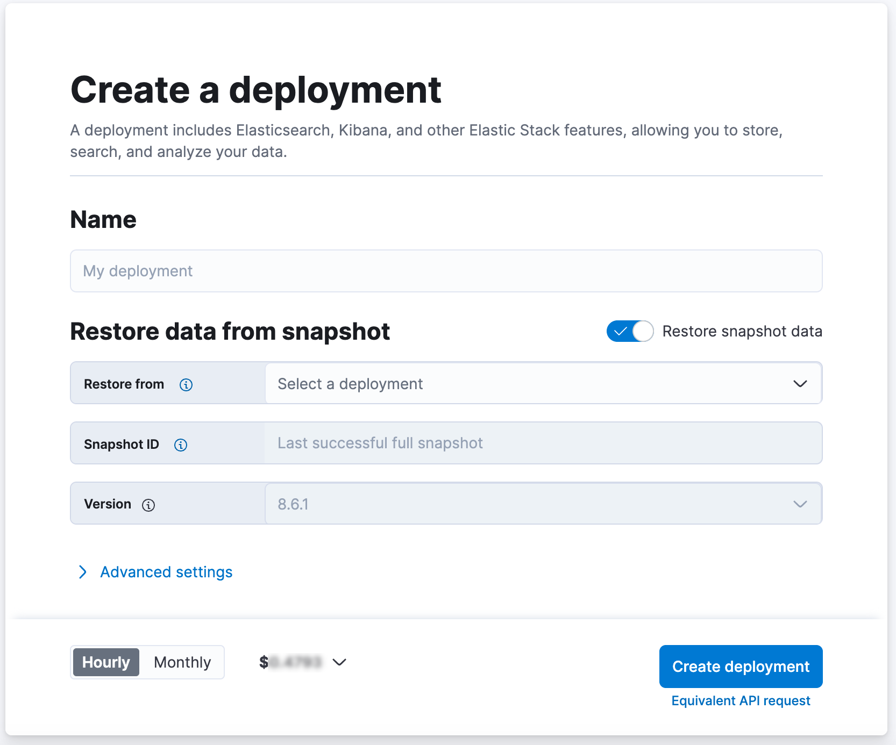

Migrate the cross-cluster search deployment template
editThe cross-cluster search deployment template is now deprecated was removed in 3.0. You no longer need to use the dedicated cross-cluster template to search across deployments. Instead, you can now use any template to configure remote clusters and search across them. Existing deployments created using this template are not affected, but they are required to migrate to another template before upgrading to version 8.x.
In order to migrate your existing CCS deployment using the CCS Deployment template to the new mechanism which supports CCR and cross-environment remote clusters you will need to migrate your data a new deployment following these steps.
Use a snapshot to migrate deployments that use the cross-cluster search deployment template
editYou can make this change in the user Cloud UI. The only drawback of this method is that it changes the URL used to access the Elasticsearch cluster and Kibana.
- The first step for any approach is to remove the remote clusters from your deployment. You will need to add them back later.
- From the deployment menu, open the Snapshots page and click Take Snapshot now. Wait for the snapshot to finish.
-
From the main Deployments page, click Create deployment. Next to Settings toggle on Restore snapshot data, and then select your deployment and the snapshot that you created.
 - Finally, configure the remote clusters.